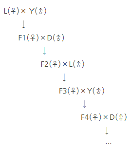
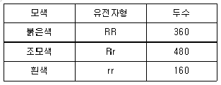
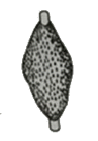
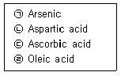
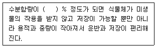
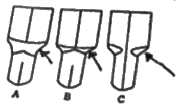
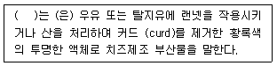

축산기사 (2020-09-26 기출문제)
1과목: 가축육종학
1. 강력유전을 하게 하는데 도움이 되는 교배법은?
- 속간교배
- 근친교배
- 잡종간교배
- 품종간교배
(정답률: 90%)

2. 육용종 순계 검정에 있어 조사 항목과 내용이 일치하지 않는 것은? (단, 닭 검정기준을 적용한다.)
- 64주령 난중: 첫 모이를 준 날로부터 62~64주령 사이의 평균 난중
- 첫 산란 일령: 첫 모이를 준 날로부터 첫 산란 개시 일령
- 육추율: 첫 모이 수수에 대한 8주령 종료 수수의 비율
- 부화율: 부화 입란 수에 대한 발생 병아리의 비율
(정답률: 67%)
3. 선발 효과를 크게 하는 방법으로 틀린 것은?
- 번식 효율을 높이거나 생존율을 증가시켜야 한다.
- 환경적 변이의 증가보다.는 유전적 변이의 증가가 커야 한다.
- 유전력을 높이기 위하여 환경변이를 크게 한다.
- 세대 간격을 짧게 하기 위해서 가능하면 강건한 젊은 가축을 번식에 이용한다.
(정답률: 87%)
4. 후대검정은 어떠한 형질에 가장 효과적으로 이용할 수 있는가?
- 유전력이 높은 형질
- 양쪽 성에서 발현되는 형질
- 도살해야만 측정할 수 있는 형질
- 개체선발을 효과적으로 이용할 수 있는 형질
(정답률: 73%)
5. 모돈 생산능력지수(SPI)에 의해 어미 돼지를 선발하는 경우 기준이 되는 것은?
- 생시 생존 산자수와 모돈의 사료 효율
- 생시 생존 산자수와 21일령 복당 체중
- 이유 두수와 모돈의 사료 효율
- 모돈의 사료 효율과 21일령 복당 체중
(정답률: 80%)
6. 전형매사이에 서로 교배를 시켰을 때의 근친계수는 얼마인가?
- 6.25%
- 12.5%
- 25%
- 50%
(정답률: 78%)
7. 다음과 같은 방식의 잡종 교배 방법은? (단, L: Landrace, Y: Yorkshire, D: Duroc 이다.)

- 상호 역교배
- 3원 윤환 교배
- 3원 종료 교배
- 3원 종료 윤환 교배
(정답률: 76%)
8. 한 염색체상에 X-Y-Z의 순으로 있는 유전자에 대해 X-Y간의 교차율은 20%, Y-Z간의 교차율은 10%이며, 실제로 X-Z간의 이중교차율이 1%라면 병발계수(coefficient of coincidence)는?
- 0.20
- 0.30
- 0.33
- 0.50
(정답률: 50%)
9. 성장률이라는 형질을 개량하고자 할 때 성장률 대신 체중이라는 형질에 대해 선발하여 성장률을 개량하는 선발 방법은?
- 간접선발
- 반복선발
- 순차선발
- 절단선발
(정답률: 87%)
10. 유지 생산량이 400kg인 암소가 속해 있는 목장의 평균 유지 생산량은 300kg이었다고 한다. 유지 생산량에 대한 유전력이 40%일 때 이 암소의 육종가는?
- 40kg
- 340kg
- 360kg
- 440kg
(정답률: 67%)
11. 젖소 산유기록의 통계적 보정에 있어서 그 대상이 되지 않는 것은?
- 산유기간
- 1일 착유횟수
- 분만 시 연령
- 분만 시 체중
(정답률: 67%)
12. AABB와 aabb 교배 시 가능한 F1 자손의 유전자형은 총 몇 가지인가?
- 1가지
- 2가지
- 3가지
- 9가지
(정답률: 74%)
13. 일정비율의 암컷은 대체종빈축의 생산을 위해 윤환교배를 실시하고 나머지 일정비율의 교잡종 암컷은 종료종모축과 교배하여 실용축을 생산하도록 하는 교배 방법은?
- 3품종 종료교배
- 종료윤환교배
- 윤환교배
- 2품종교배
(정답률: 71%)
14. 초년도의 산란수를 지배하는 GOODALE-HAYS의 산란 5요소가 아닌 것은?
- 조숙성
- 취소성
- 강건성
- 동기휴산성
(정답률: 72%)
15. 돼지의 도체 품질 개량을 위하여 가장 많이 이용되는 검정방법은?(오류 신고가 접수된 문제입니다. 반드시 정답과 해설을 확인하시기 바랍니다.)
- 혈통검정
- 능력검정
- 후대검정
- 형매검정
(정답률: 50%)
16. 1000마리 쇼트혼 소의 모색 유전자형이 아래와 같다고 할 때 직접법으로 계산한 붉은 모색의 유전자 빈도는?

- 0.4
- 0.5
- 0.6
- 0.84
(정답률: 75%)
17. 다음 육우의 경제형질 중 유전력이 가장 높은 것은?
- 수태율
- 도체율
- 이유시 체중
- 배장근 단면적
(정답률: 77%)
18. 형질 A와 B의 유전공분산이 5이고 A와 B의 유전분산이 각각 25이면 A와 B의 유전상관은 얼마인가?
- 0.5
- 0.2
- 0.02
- 0.01
(정답률: 70%)
19. 돼지의 염색체 수(2n)은?
- 38개
- 46개
- 60개
- 78개
(정답률: 67%)
20. 종간잡종으로 생산되는 동물은?
- 말
- 노새
- 염소
- 당나귀
(정답률: 89%)
2과목: 가축번식생리학
21. 다음 중 돼지의 평균 임신기간은?
- 90일
- 95일
- 114일
- 148일
(정답률: 85%)
22. 정자의 형성 과정 중 X-정자와 Y-정자는 어느 과정에서 형성되는가?
- 정원세포의 증식과정
- 제 1감수분열
- 제 2감수분열
- 형태변화과정
(정답률: 66%)
23. 태반의 분류 중 태반의 모양이 그림과 같은 것은?

- 대상태반
- 궁부성태반
- 산재성태반
- 원반상태반
(정답률: 63%)
24. 다음 중 성스테로이드 호르몬에 해당하는 것은?
- 갑상선호르몬
- 프로게스테론
- 프로락틴
- 부신피질자극호르몬
(정답률: 80%)
25. 다음 중 소의 평균 발정주기로 옳은 것은?
- 4~5일
- 10~15일
- 21~22일
- 30~35일
(정답률: 75%)
26. 정자의 운동에 필요한 에너지를 합성 공급하는 부위로 옳은 것은?
- 두부(head)
- 중편부(middle piece)
- 주부(main piece)
- 경부(neck)
(정답률: 74%)
27. 돼지 예상 정액 보존 온도로 적합한 것은?
- 5도
- 10도
- 15도
- 25도
(정답률: 55%)
28. 다음 중 계절 번식의 특성을 지닌 가축은?
- 젖소
- 돼지
- 닭
- 면양
(정답률: 87%)
29. 주요 가축의 번식적령기를 결정하는 주요 요인은?
- 온도와 위도
- 월령과 체중
- 계절과 일조시간
- 집단의 개체수
(정답률: 80%)
30. 자궁근의 강력한 수축운동을 유발하여 분만을 유기하는 호르몬이 아닌 것은?
- 옥시토신
- 에스트로겐
- 프로게스테론
- 프로스타글란딘(PGF2α)
(정답률: 61%)
31. 다음 중 뇌하수체 후엽에서 분비되는 호르몬은?
- 난포자극호르몬(FSH)
- 황체형성호르몬(LH)
- 프롤락틴(prolactin)
- 옥시토신(oxytocin)
(정답률: 81%)
32. 다음 중 발정한 암퇘지의 배란시기로 옳은 것은?
- 발정개시 후 12~24시간 사이이다.
- 발정개시 후 30~45시간 사이이다.
- 발정개시 후 50~65시간 사이이다.
- 발정 개시 시기는 배란시기와 무관하다.
(정답률: 58%)
33. 번식 장애의 원인에 해당하지 않는 것은?
- 난소 발육 부진
- 프리마틴
- 포유 중 무발정
- 영구 황체
(정답률: 68%)
34. 성숙한 수컷 포유동물의 부생식선이 아닌 것은?
- 랑게르한스 섬
- 정낭선
- 전립선
- 카우퍼선
(정답률: 82%)
35. 소에서 수정 후 7일경에 수정란을 채란하려고 한다면 어느 부위에서 어떤 발육단계의 수정란이 주로 채란되는가?
- 자궁, 배반포기
- 난관, 4~16세포기
- 자궁, 4~16세포기
- 난관, 배반포기
(정답률: 63%)
36. 임신한 말에서 분비되는 호르몬으로 다수의 난포를 발육시키는 기능이 있는 것은?
- 임마융모성 성선자극호르몬(eCG)
- 임부융모성 성선자극호르몬(hCG)
- 성장호르몬(GH)
- 성선자극호르몬 방출호르몬(GnRH)
(정답률: 72%)
37. 다음 중 가장 조기에 소의 임신진단이 가능한 방법은?
- 직장검사법
- 유즙 중 호르몬 측정법
- 초음파 진단법
- 방사선 진단법
(정답률: 63%)
38. 그라아프난포(Graafian follicle)의 조직학적 구성요소가 아닌것은?
- 간질세포
- 투명대
- 난모세포
- 과립막세포
(정답률: 61%)
39. 젖소에서 일정기간의 착유기간 후 다음 비유기간 동안 최대한의 우유를 생산하기 위하여 실시하는 건유기의 가장 바람직한 기간은?
- 20~30일
- 30~50일
- 50~70일
- 70~90일
(정답률: 70%)
40. 소 난자의 배란 후 수정능 유지시간은?
- 6~8시간
- 20~24시간
- 30~48시간
- 48~72시간
(정답률: 72%)
3과목: 가축사양학
41. 체외 소화 시험에 사용하는 지시제(indicator)의 조건이 아닌 것은?
- 생리적으로 불활성 물질일 것
- 독성이 없을 것
- 소화관에서 흡수 또는 대사되는 물질일 것
- 소화 내용물과 쉽게 섞이고 고르게 분포될 것
(정답률: 67%)
42. 소에서 생체 및 조직의 성장순서를 각각 4단계로 구분한 것 중 순서가 틀린 것은?
- 머리 → 목 → 흉곽 → 허리
- 신경 → 골격 → 근육 → 지방
- 관골 → 경골 → 대퇴골 → 골반
- 근육지방 → 피하지방 → 내장지방 → 신장지방
(정답률: 72%)
43. 최소가격배합표(least cost formula) 작성에 필요한 자료로써 필수적인 것이 아닌 것은?
- 영양소 요구량
- 원료의 성분분석표
- 원료의 상대가치
- 원료의 사용가격
(정답률: 73%)
44. 반추동물의 소화 작용 중 타액(침)의 기능으로 틀린 것은?
- 사료 중의 단백질이 부족할 때 타액에서 공급하는 질소(N)의 비중이 높아진다.
- 성숙한 반추동물의 타액에는 아밀라아제와 리파아제가 있어 소화에 도움을 준다.
- 반추동물의 타액은 알칼리성으로 반추위에서 발효될 때 생성되는 산을 중화시키는 완충제 역할을 한다.
- 반추동물의 타액은 Na+, K+, Ca2+, Mg2+, CI-, HCO3-, 요소 등이 비교적 높은 농도로 함유되어 있어 반추위내 미생물에 영양소 공급원이 되기도 한다.
(정답률: 64%)
45. 반추동물에서는 요소나 암모니아와 같은 물질이 단백질원으로 이용되고 있는데 이러한 물질을 무엇이라 하는가?
- 진정단백질(true protein)
- 조단백질(crude protein)
- 비단백태질소화합물(NPN)
- 미생물체단백질(microbial protein)
(정답률: 81%)
46. 비타민의 종류와 주요기능이 바르게 연결된 것은?
- 비타민A - 항산화제
- 비타민D - 야맹증 치료
- 비타민E - 칼슘과 인의 대사
- 비타민K - 혈액응고
(정답률: 78%)
47. 다음 중 셀렌(Se)의 결핍증상은?
- 심장의 위축
- 닭의 삼출성 소질
- 전신마비
- 시야장애
(정답률: 68%)
48. 유기비소제가 가축의 성장을 촉진시키는 기전이 아닌 것은?
- 장 내에 서식하는 유해한 미생물의 성장을 억제한다.
- 장벽을 얇게 하여 영양소의 흡수를 돕는다.
- 질소의 배설을 감소시키는 등 단백질을 절약하는 작용을 한다.
- 장내 암모니아의 생성을 촉진하여 단백질 합성을 돕는다.
(정답률: 53%)
49. 점감점증법은 산란계의 산란율을 증가시키기 위해 최대 얼마까지의 점등시간을 연장해 점등관리를 하는가? (단, 초산이 시작되는 20주령 이후부터로 한다.)
- 15시간
- 17시간
- 19시간
- 21시간
(정답률: 68%)
50. 옥수수사일리지의 조단백질 함량이 7%, 건물이 40% 들어있다면 건물기준으로 옥수수사일리지의 조단백질 함량은 몇 %인가?
- 16.5
- 17.5
- 18.5
- 19.5
(정답률: 63%)
51. 소 비육 시 사료와 육질과의 상관관계 설명이 틀린 것은?
- 백색지방을 생산하는데 영향을 크게 미치는 사료원료는 맥류, 밀기울, 고구마, 감자, 전분박 등이다.
- 사료 내 비타민 A의 함량은 육색과 지방 형성에 영향을 준다.
- 비육 말기에 청초나 사일리지를 급여하면 지방의 황색화가 일어난다.
- 육질 향상을 위해 비육 말기에 지방을 연하게 하는 사료를 많이 급여한다.
(정답률: 61%)
52. 다음 [보기]의 영양소를 바르게 분류한 것은?

- 아미노산:㉢, 비타민:㉡ , 지방산:㉠, 미네랄:㉣
- 아미노산:㉡, 타민: ㉢, 지방산:㉣, 미네랄:㉠
- 아미노산:㉢, 비타민:㉡, 지방산:㉣, 미네랄:㉠
- 아미노산:㉡, 비타민:㉢, 지방산:㉠, 미네랄:㉣
(정답률: 62%)
53. 황을 함유한 아미노산이 아닌 것은?
- 시스테인(cysteine)
- 메치오닌(methionine)
- 시스틴(cystine)
- 트립토판(tryptophan)
(정답률: 62%)
54. 반추위 내 미생물의 작용에 의해 생성되는 휘발성지방산은?
- 팔미트산(palmitic acid)
- 스테아르산(stearic acid)
- 리놀레산(linoleic acid)
- 초산(acetic acid)
(정답률: 68%)
55. 가축을 초지에 방목할 때 그라스테타니 발생과 관련이 있는 무기물로만 나열된 것은?
- K, Ca
- K, Mg
- Mg, Cu
- Fe, Co
(정답률: 60%)
56. 곡류와 대두박 중심의 양돈 사료에 있어서 가장 결핍되기 쉬운 필수아미노산은?
- 류신(leucine)
- 발린(valine)
- 페닐알라닌(phenylalanine)
- 라이신(lysine)
(정답률: 75%)
57. 다음 사료 중 돼지에게 급여하였을 때 연지방을 생성하는 사료는?
- 야자박
- 호밀
- 탈지유
- 아마인박
(정답률: 55%)
58. 반추가축의 소화기관 중 영양소별 흡수장소를 설명한 것으로 틀린 것은?
- 포도당은 제4위에서 주로 흡수된다.
- 제3위에서는 휘발성지방산(VFA)과 무기물의 흡수가 일어난다.
- 휘발성지방산(VFA)은 단순확산에 의해 제2위벽으로 흡수된다.
- 흡수된 휘발성지방산(VFA)은 제1위 정맥을 통해 문맥을 거쳐 간장으로 들어간다.
(정답률: 60%)
59. 포도당과 갈락토오스가 각각 1분자씩 결합된 것으로서 포유동물의 젖 속에 들어 있는 것은?
- 자당(Sucrose)
- 엿당(Maltose)
- 유당(Lactose)
- 과당(Fructose)
(정답률: 75%)
60. 사료의 품질평가 방법으로 가장 정확한 방법은?
- 각 사료의 색, 맛, 향기, 냄새, 촉감, 형상 등을 판단하여 평가하는 경험적인 방법
- 가축을 이용한 소화시험, 사양시험, 영양시험, 대사시험 등 많은 시간과 경비, 시설, 노력 등이 필요한 동물시험법
- 일정용량의 표준중량을 평가하고자 같은 종류의 사료 용량과 중량을 비교하여 평가하는 용적중량에 의한 방법
- 약품과 기기를 사용하여 정성분석과 정량분석을 하는 사료의 화학적인 품질평가 방법
(정답률: 73%)
4과목: 사료작물학 및 초지학
61. 사일리지 재료에 대한 설명으로 옳은 것은?
- 화본과는 단백질이 많고 광물질이 많아 완충력이 크므로 사일리지 재료로서 가장 적절하다.
- 목초를 예취하여 바로 사일리지를 조제하는 것은 수분함량이 높아 사일리지의 발효품질이 떨어지므로 예건하거나 첨가제를 이용하는 것이 좋다.
- 수수류 중에서 사일리지에 가장 적합한 것은 잎과 줄기의 비율이 높은 수단그라스계 잡종이다.
- 사일리지 재료의 수분이 많을 때 이용되는 첨가물은 요소가 가장 많이 쓰인다.
(정답률: 51%)
62. 다음 ( ) 안에 적합한 숫자는?

- 15
- 25
- 35
- 45
(정답률: 74%)
63. 다음 조사료의 종류 중 TDN(Total digestible nutrients) 함량이 가장 적은 것은?
- 볏짚
- 옥수수
- 알팔파
- 오차드그라스(초기)
(정답률: 67%)
64. 건초의 품질평가에 있어서 양질의 건초에 대한 설명이 아닌 것은?
- 녹색도가 낮다.
- 잎의 비율이 높다.
- 상쾌한 냄새를 낸다.
- 협잡물이 혼입되어 있지 않다.
(정답률: 67%)
65. 다음 중 다년생 두과 (콩과) 목초가 아닌 것은?
- 화이트클로버
- 헤어리베치
- 알팔파
- 버즈풋트레포일
(정답률: 51%)
66. 여름철의 예취와 목초의 하고현상 관리에 대한 설명으로 틀린 것은?
- 북방형 목초는 25~27도가 되면 자라는 것이 거의 중지된다.
- 계절적인 수량의 변동이 낮은 품종은 버즈풋트레포일과 톨페스큐이다.
- 하고지수가 높을수록 하고에 강하다.
- 장마 전에 방목이나 예취를 하여 짧은 초장으로 장마철에 들어가도록 한다.
(정답률: 54%)
67. 작부조합에 이용되는 사료작물이 갖추어야 할 전제조건으로 거리가 먼 것은?
- 단위면적당 TDN 수량에 관계없이 건물 수량이 높아야 한다.
- 내병성이 강하고 품질이 우수하여야 한다.
- 기계화가 쉬우며 재배와 수확에 노력이 적게 들어야 한다.
- 수확한 수 이용과 저장이 쉬우며 생산비용이 적게 들어야 한다.
(정답률: 77%)
68. 생초에 가까운 품질을 확보할 수 잇으나 비용이 많이 소요되는 건조제조 방법은?
- 화력건조
- 천일건조(양건)
- 발열건조
- 삼각가건조
(정답률: 57%)
69. 고품질 곤포 사일리지를 제조하는 방법으로 옳은 것은?
- 수분함량을 40% 이하로 한다.
- 압축은 중요하지 않으므로 느슨하게 곤포한다.
- 비닐을 2겹으로 감는다.
- 곤포 후 바로 비닐을 감는다.
(정답률: 61%)
70. 만생종을 기준으로 TDN(Total digestible nutrients) 생산과 긴 겨울철을 고려할 때 우리나라 중북부 지방의 낙농농가에 가장 적절한 작부조합은?
- 옥수수 +호밀
- 옥수수 + 이탈리안 라이그라스
- 수수 + 이탈리안 라이그라스
- 수수 + 호밀
(정답률: 52%)
71. 사일리지용 사료작물은 재배, 이용 목적상 어떤 특성을 갖고 있는 것을 우선적으로 선택하여야 하는가?
- 초장이 짧은 것
- 수분함량이 많은 근채류
- 당분함량과 수량이 많은 것
- 다년생 목초류
(정답률: 66%)
72. 어떤 목초의 영양소 함량 중 가소화 조단백질 10%, 가소화 조섬유 12%, 가용무질소물 26% 및 가소화 조지방 함량이 1% 일 때 이 목초의 가소화 영양소총량(TDN)은 몇 % 인가?
- 48.25
- 50.25
- 52.25
- 54.25
(정답률: 62%)
73. 다음 중 하번초(bottom grass)에 해당하는 목초는?
- 페레니얼라이그라스
- 오차드그라스
- 리드카나리그라스
- 메도 페스큐
(정답률: 44%)
74. 다음 중 우리나라 남부지방의 답리작에 알맞으며, 특히 기호성과 수량이 높은 사료 작물은?
- 연맥
- 호밀
- 보리
- 이탈리안 라이그라스
(정답률: 65%)
75. 볏짚을 소의 사료로 이용하려 할 때 기호성과 소화율을 높이는 방법으로 가장 적절한 것은?
- 논바닥에서 건조한 후 비를 맞추어 수분을 조절하여 이용한다.
- 충분히 장기간 건조하여 이용한다.
- 요소에 침지처리 후 이용한다.
- 생볏짚 곤포 사일리지로 이용한다.
(정답률: 59%)
76. 초지 조성을 위한 작업 단계를 가장 바르게 나열한 것은?
- 쇄토 → 비료, 종자살포 → 석회살포→ 경운 → 복토 → 진압
- 경운 → 석회살포 → 쇄토 → 비료, 종자살포 → 복토 → 진압
- 비료, 종자살포 → 경운 → 석회살포→ 쇄토 → 복토 → 진압
- 석회살포 → 비료, 종자살포 → 경운 → 쇄토 → 복토 → 진압
(정답률: 62%)
77. 다음 목초 유식물 중 억압력 지수가 가장 높은 초종은?
- 톨페스큐
- 티머시
- 이탈리안라이그라스
- 켄터키블루그라스
(정답률: 38%)
78. 영양생장을 하고 있는 사료작물의 식별방법 중 다음 그림의 화살표는 어느 부위를 나타내고 있는가? (단, 화살표는 잎몸과 잎집 사이를 갈라놓은 분기점을 나타내는 분열조직대를 가리킴)

- 유경
- 경령
- 엽초
- 엽이
(정답률: 51%)
79. 초지조성의 초기 관리로서 부적합한 것은?
- 가벼운 방목에 의한 진압과 토핑(topping)
- 도장 목초와 잡초의 억제
- 목초의 분얼 촉진
- 초겨울의 추비시용
(정답률: 54%)
80. 목초 테타니병(grass tetany)이란?
- 가축의 혈액 중 마그네슘(Mg)결핍으로 인한 질병
- 톨페스큐 초지에 가축을 장시간 방목시킬 때 발생하는 질병
- 알칼로이드 화합물을 함유하는 목초를 섭취하였을 때 발생하는 질병
- 가축의 영양소 요구량에 맞추어 사료를 급여하지 못할 때 발생하는 질병
(정답률: 58%)
5과목: 축산경영학 및 축산물가공학
81. 축산경영에 대한 설명으로 옳은 것은?
- 축산경영의 실태는 나라와 시대에 따라서 항상 같다.
- 축산경영은 축산업을 운영하는 것으로 축산물을 최대로 생산함을 의미한다.
- 축산경영이란 축산의 목표를 달성하기 위해서 경영요소를 효율적으로 결합, 이용하는 합리적인 경영활동을 말한다.
- 축산경영이란 축산업을 조직하고 운영하기 위해서 무제한적인 자원으로 축산물을 생산함을 의미한다.
(정답률: 74%)
82. 축산물의 생산비를 계산하는 원칙으로 틀린 것은?
- 생산비는 화폐가액으로 표시될 수 있어야 한다.
- 생산물을 생산하기 위하여 소비된 것이어야 한다.
- 생산물을 생산하기 위해 구입한 사실이 있는 것만 포함해야 한다.
- 정상적인 생산활동을 위해 소비된 것이어야 한다.
(정답률: 63%)
83. 양돈농가의 총수입(TR)에서 총비용(TC)을 뺀 것을 이윤이라 할 때, 다음 중 이윤을 극대화시켜주는 조건으로 옳은 것은? (단, MR: 한계수익, MC: 한계비용)
- MR > MC
- MR < MC
- MR = MC
- MC = 0
(정답률: 66%)
84. 토지의 적재력(loading ability)에 해당하는 기능으로 틀린 것은?
- 가축을 사육할 수 있는 장소로서의 기능
- 제반시설 및 노동이 가해지는 장소로서의 기능
- 아무리 이용하여도 소모되지 않는 장소로서의 기능
- 가축을 사육하는데 필요한 사료작물을 재배하는 장소로서의 기능
(정답률: 65%)
85. 어느 축산농가의 연간 축산물 매출액이 2천만원, 총 경영자본이 6천만원이라면 이 농가의 축산자본회전율은 대략 얼마인가?
- 0.25
- 0.3
- 3.0
- 4.0
(정답률: 53%)
86. 어떤 투입물을 가장 유리한 다른 대체적인 용도에 사용하지 못할 때, 포기하게 되는 보수를 무엇이라고 하는가?
- 한계비용
- 기회비용
- 감가상각비
- 한계수익
(정답률: 68%)
87. 축산경영에 있어서 규모의 경제성이 생기는 요인이 아닌 것은?
- 분업 이익의 획득
- 경기변동의 신축성
- 개별경영의 자원제한성
- 생산요소의 불가분할성
(정답률: 41%)
88. 우리나라 도시근교형 낙농경영의 특징이라고 볼 수 없는 것은?
- 경영의 집약도가 다.른 경영형태에 비해 높다.
- 시유용 원유를 생산 및 공급하는데 유리하다.
- 규모를 확장하는데 제한적인 요인이 적은 편이다.
- 토지 면적이 좋고 구입사료에 의존하므로 사료의 자급률이 낮다.
(정답률: 71%)
89. 농축산물 마케팅의 4P전략 구성항목으로 틀린 것은?
- 상품(Product)
- 가격(Price)
- 홍보(Promotion)
- 지불(Payment)
(정답률: 74%)
90. 토지의 경제적 성질에 해당하지 않는 것은?
- 불가증성
- 불이용성
- 불가동성
- 불소모성
(정답률: 62%)
91. 다음 중 근수축 메카니즘에 해당하지 않는 것은?
- 근원섬유 형질막에 있어서의 탈분극(활동전위)
- 트로포닌과 Ca2+의 결합
- 액틴-마이오신-필라멘트 사이의 연결가교 형성
- 근소포체에 의한 Ca2+의 능동흡수개시
(정답률: 47%)
92. 식육의 일반적인 특성에 대한 설명으로 틀린 것은?
- 고기는 냉장숙성육이 육질이 부드러우면서 연도 측면에서 상품성이 있다.
- 냉동은 고기의 저장기간을 연장하며 육질도 향상시킨다.
- 냉동과정 중에 발생한 얼음입자들이 고기의 근섬유 조직을 손상시킬 수 있다.
- 육류의 화학적 조성은 가축의 종류, 성별, 연령, 사양조건, 영양상태, 건강상태 및 부위에 따라 다르다.
(정답률: 76%)
93. 냉동유제품에 주로 사용하는 안정제가 아닌 것은?
- gelatin
- pectin
- sugar esters
- sodium alginate
(정답률: 45%)
94. 치즈의 일반적인 제조공정의 순서로 옳은 것은?
- 우유의 균질 → 살균 → rennet 첨가 → 유청배제 → 커드의 절단
- 우유의 살균 → rennet 첨가 → starter 첨가 → 커드의 절단 → 유청배제
- 우유의 살균 → starter 첨가 → rennet 첨가 → 커드의 절단 → 유청배제
- 우유의 균질 → 살균 → starter 첨가 → rennet 첨가 → 커드의 절단 → 유청배제
(정답률: 51%)
95. 버터가 노란색을 띠게 하는 성분으로 옳은 것은?
- Lactoferrin
- β-lactoglobulin
- Carotenoid
- Riboflavin
(정답률: 53%)
96. 염지액을 제조할 때 주의사항으로 틀린 것은?
- 염지액 제조를 위해 사용되는 물은 미생물에 오염되지 않은 깨끗한 물을 이용한다.
- 천연 향신료를 사용할 경우에는 천으로 싸서 끓는 물에 담가 향을 용출시킨 후 여과하여 사용한다.
- 염지액 제조를 위해 아스코르빈산과 아질산염을 함께 물에 넣어 충분히 용해시킨 후에 사용한다.
- 염지액을 사용하기 전 염지액 내에 존재하는 세균과 잔존하는 산소를 배출하기 위해 끓여서 사용한다.
(정답률: 54%)
97. 도체 전기자극에 대한 설명으로 틀린 것은?
- 저전압 전기자극은 가급적 방혈 후 천천히 30-80V의 저전압으로 10-15분간 자극한다.
- 방혈 후 60분 이내면 가능하며 500-700V의 고전압으로 도체를 1.5-2분간 자극한다.
- 교류가 직류보다. 근육의 pH감소 효과가 커서 주로 이용된다.
- 소와 양의 적정 주파수는 가장 큰 pH감소를 가져오는 9-16Hz가 적정선으로 알려져 있다.
(정답률: 40%)
98. 가축의 종류에 따라 식육의 풍미가 달라지는 것은 식육의 어떤 성분에 기인하기 때문인가?
- 수분
- 비타민
- 지질
- 무기질
(정답률: 71%)
99. 베이컨의 종류에 대한 설명으로 옳은 것은?
- 돼지의 복부육을 가공한 것을 로인 베이컨이라 한다.
- 숄더베이컨은 지방이 적고 육색이 옅고 육질이 다.소 무른 특징을 갖고 있다.
- 사이드베이컨은 돼지의 2분체를 골발, 정형 후 가공한 것으로 영국과 덴마크 등 서유럽에서 주로 생산되고 있다.
- 미들베이컨은 어깨부위를 주로 사용하며 카나디언베이컨이 이에 속한다.
(정답률: 52%)
100. 다.음 ( )에 알맞은 내용은?

- 전유
- 대용유
- 인공유
- 유청
(정답률: 73%)